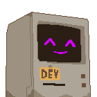
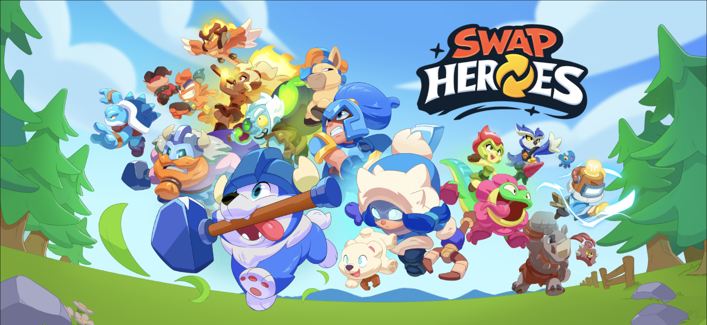
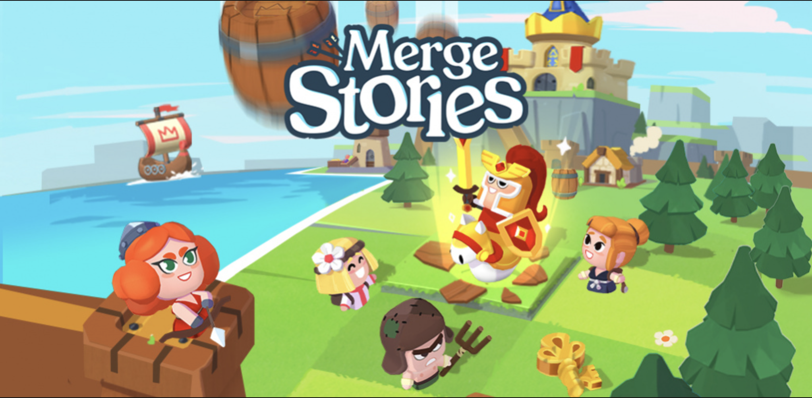
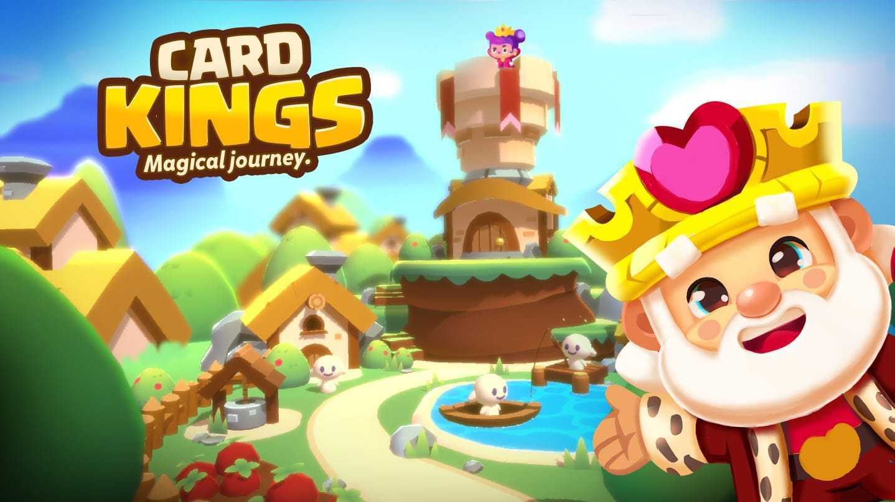
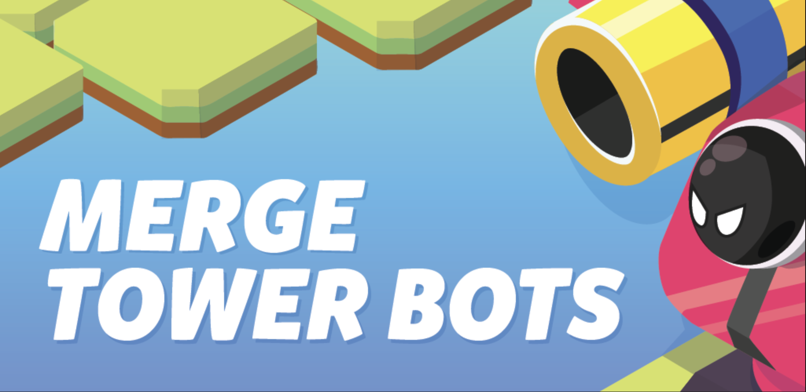
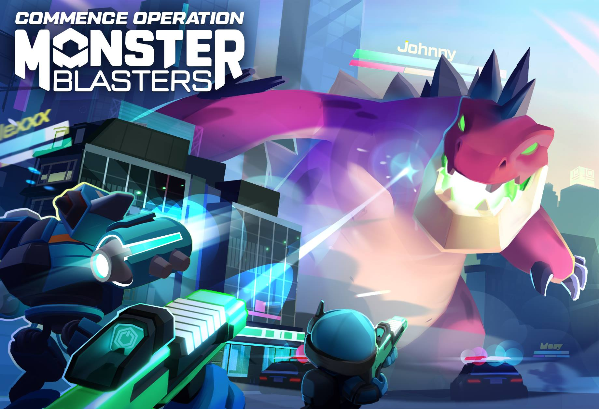
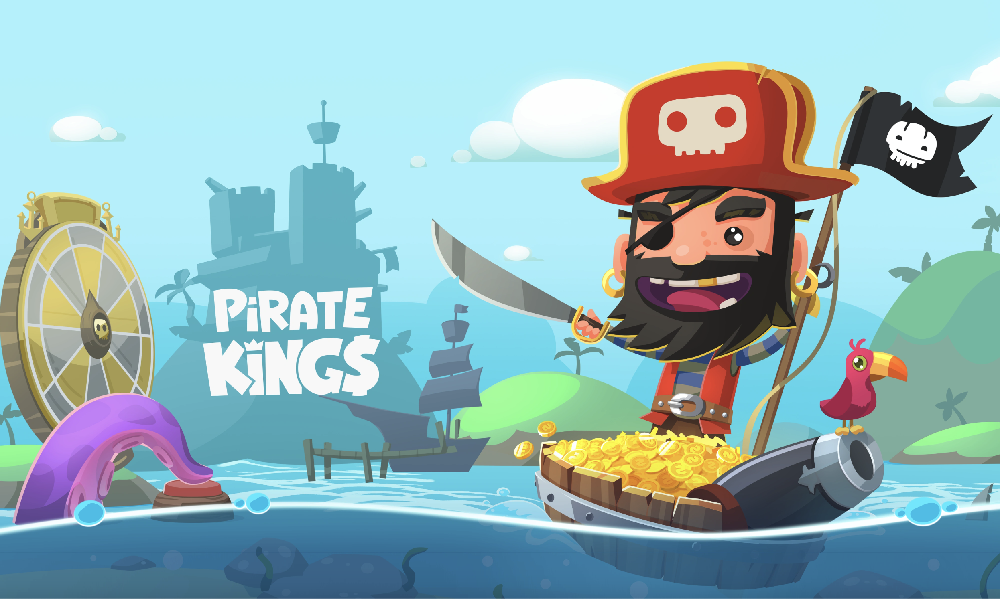

Gal Bartouv Dev Blog
Over 9 years of shipping games. Currently leading client development at Glaive. Writing about the real-world patterns, systems, and hard-won lessons behind production games.
Articles
// 11 ARTICLESStale texture references inside .mat files silently drag unintended asset bundles into memory at runtime. Learn how to detect and eliminate ghost textures with a simple editor tool.


Handling complex inheritance hierarchies in Unity's serialization system. Learn how to serialize polymorphic types cleanly without losing data or breaking the Inspector.

Creating sweeping shine effects for Unity UI. Learn how to add polished, eye-catching visual feedback to your game's interface elements.

RectMask2D can silently destroy your UI performance. Discover why this seemingly innocent component causes massive overhead and what to do about it.

Recreating the distinctive wobbly text shader from Night in the Woods. A deep dive into vertex displacement and shader graph techniques.

Building adaptive layouts that work across mobile, tablet, and desktop. Handling different aspect ratios and screen sizes gracefully.

Managing complex input state across multiple systems. A clean pattern for preventing input conflicts in cutscenes, dialogs, and overlapping game states.

Understanding batching, static meshes, and SRP batcher. Practical techniques to reduce draw calls and improve rendering performance in production.

Moving from loose event systems to structured command patterns. How to build maintainable, testable game architecture at scale.

Over 600 compiler warnings at startup? Learn how to use Pragmas and the csc.rsp file to take back control of your Unity console.

Deep dive into Unity's camera system and rendering pipeline. Understanding culling, layers, and multi-camera setups for complex scenes.

Organizing Unity projects by business domains instead of technical layers. A scalable approach to project structure for growing teams.
Making randomness reproducible for testing. Using seeded RNG to create deterministic gameplay that's easy to debug and test.
Managing pull requests in game development teams. Strategies for code review, merge conflicts, and keeping development velocity high.
Creating git aliases and custom commands for common Unity workflows. Automate repetitive tasks and streamline your version control.
Advanced git workflows for Unity projects. Handle binary files, solve merge conflicts, and maintain clean commit history in team environments.
Understanding the fundamentals of rendering pipelines. From vertices to pixels, learn how Unity transforms your 3D scenes into images.
Creating custom editor tools to sync video references with animation timelines. Bridge the gap between concept art and implementation.
Building custom scene view tools for level design workflows. Extend Unity's editor to match your team's specific needs.
Podcast
// FEATURED APPEARANCE
Deep dive into GPU optimization techniques including batching, shaders, and vertex optimization. Discussing practical approaches to solve rendering performance bottlenecks in Unity.

Projects
// SHIPPED GAMES
Currently in development at Glaive. A mobile action game featuring a roster of heroes with unique abilities.

Real-time fantasy battles with strategic squad combat. Assemble teams of mages, warriors, and rangers to battle monsters in vivid fantasy worlds. Features guilds, quests, and regular content updates.

Cheerful city simulator where you manage a village community. Roll dice for fortune, help characters achieve dreams, manage resources, and grow your town in this free-to-play city builder.

Revolutionary merge game combining non-identical item merging with battle gameplay and stunning 3D graphics. Build kingdoms, raid enemies, and discover new territories in this innovative casual game.

An unreleased card-based mobile game developed at Jelly Button Games. A new direction for the studio between Merge Tower Bots and Merge Stories.

Addictive merge idle clicker combining merge mechanics with tower defense. Merge robots to create powerful defenders, protect your gold from monster waves, and progress through challenging levels.

Army vs. Monsters MOBA in 3D. Command soldiers, mechs, and helicopters against giant monsters, or become the monster yourself. Asymmetric multiplayer action in destructible city environments.

Build your pirate kingdom, raid enemy islands, and spin the wheel to earn rewards. A massively successful social mobile game with 50+ million downloads combining strategy with casino-style mechanics.
Experience
// CAREERLeading the client development team on Solaria: Dawn of Heroes and Swap Heroes.
Led the client development team on Pirate Kings, Merge Tower Bots, Card Kings, Merge Stories, and Dice Life.
Mobile game development in Unity3D. Where it all started.
Bartouv
Game developer with a passion for building games that actually ship. I write about the lessons, patterns, and systems I've learned from years of making mobile games—stuff you only figure out when real players are hammering your code every day.
I focus on the practical side of game development: how to structure projects so your team doesn't drown in spaghetti code, how to squeeze real performance out of mobile devices, and how to make the tough calls that turn prototypes into finished products.
Follow along for articles on game development, performance, and what it really takes to ship.